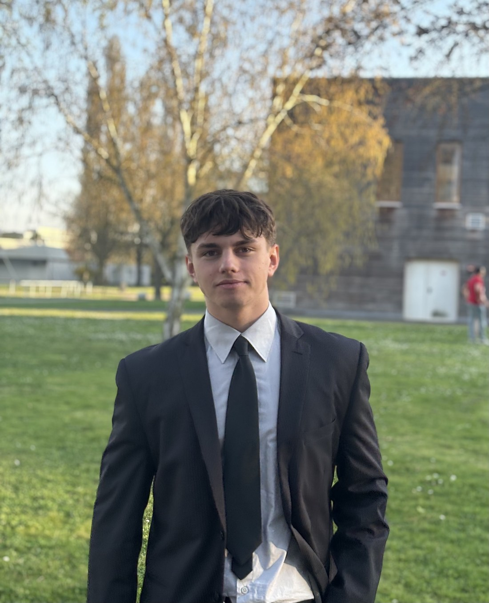

L'acte de fondation · l'académique & le terrain
Les fondations : la théorie rencontre la pratique
Mon parcours a débuté par un BUT Techniques de Commercialisation à l'IUT d'Illkirch. J'y ai forgé un socle de compétences solides en marketing, vente, management et business development. Cette théorie s'est rapidement transformée en pratique lors de mes premiers pas dans le monde professionnel, notamment chez fischer France en tant qu'assistant chef de projet lors du lancement d'un nouveau produit. C'est aussi durant cette période que j'ai décroché la première place du concours national de négociation à Paris — la preuve concrète d'une progression décisive dans l'art de convaincre et de conclure.
